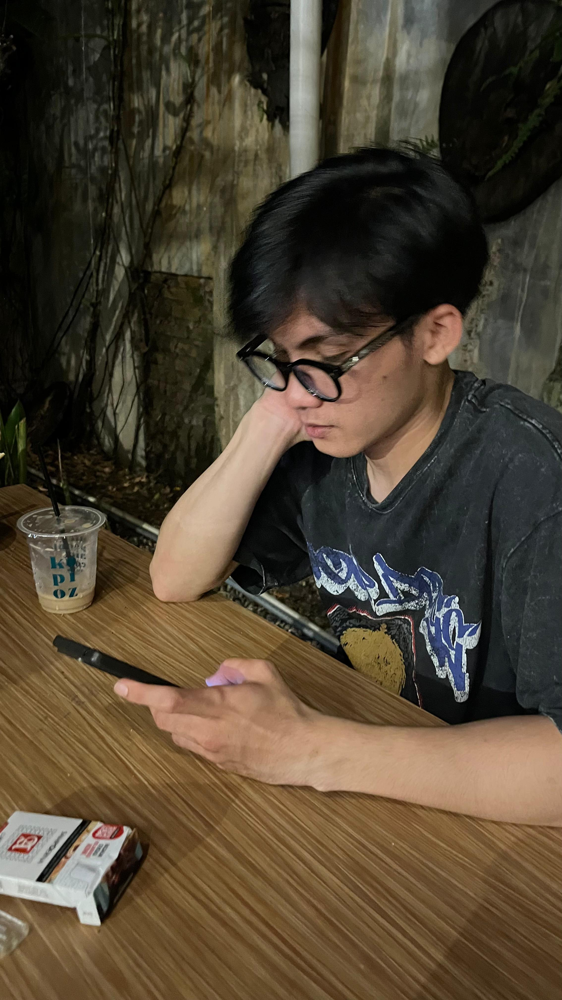
01 THEMarried
Muhammad Fajjar
Si paling punya nyali
SOME PEOPLE JUST FEEL LIKE HOME.
A small corner of the internet
for the people, stories, and moments
we don't want to forget.
It started with conversations. Then came the jokes, the random plans, the late replies, and the moments that somehow became memories.
This is a little space to collect the pieces of our story — the people behind the messages and the friendships that exist beyond the screen.
made of little things ↗
Every circle has its own characters.
These are a few of ours.

01 THESi paling punya nyali
Si pembawa suasana
Si paling bijak
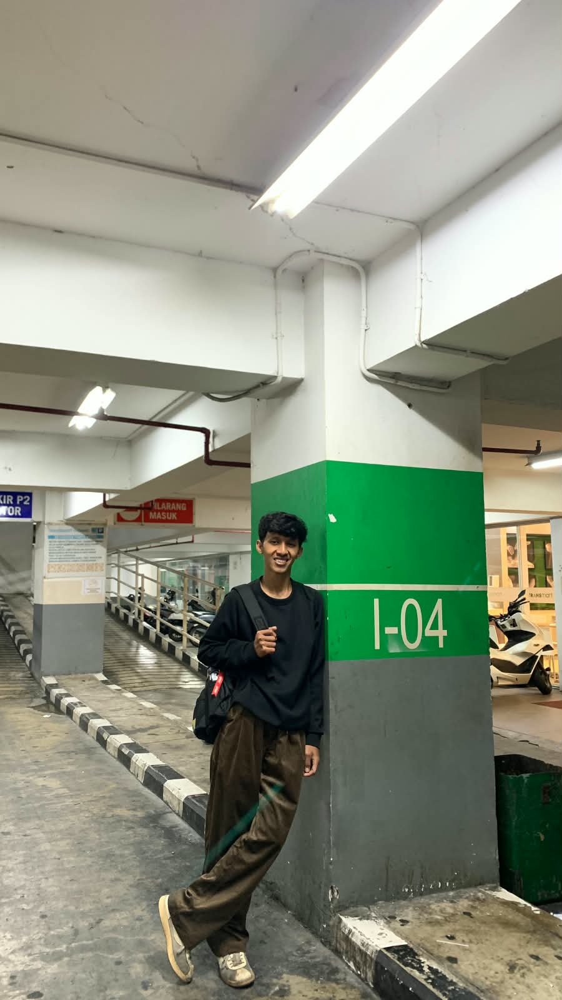
04 THESi paling punya pendirian
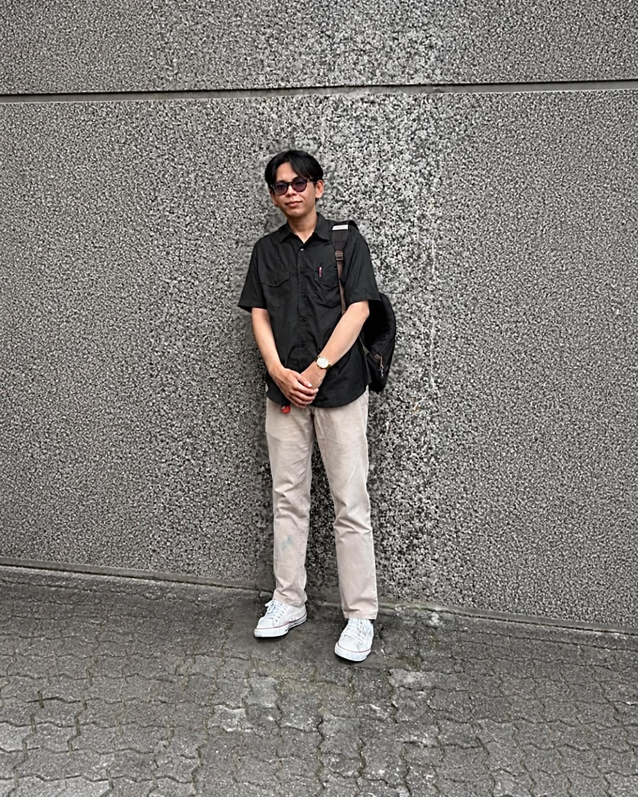
05 THESi paling pintar dan Ustad
 06
THE
06
THESi paling punya kreativitas
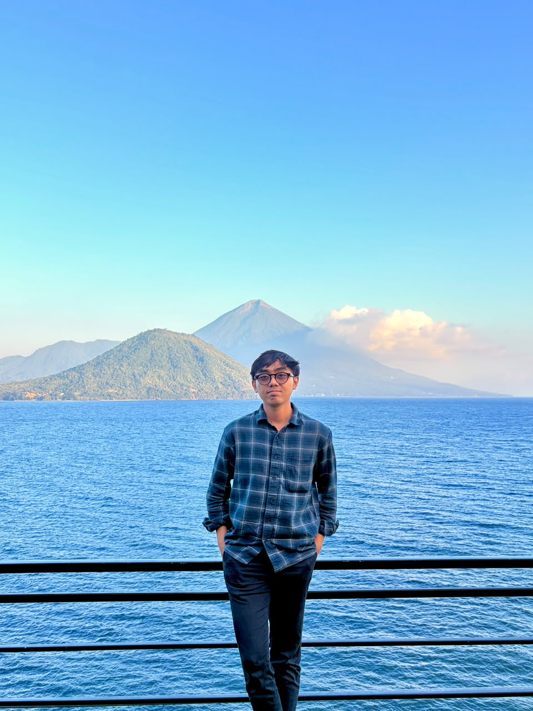
07 THESi paling kerja keras
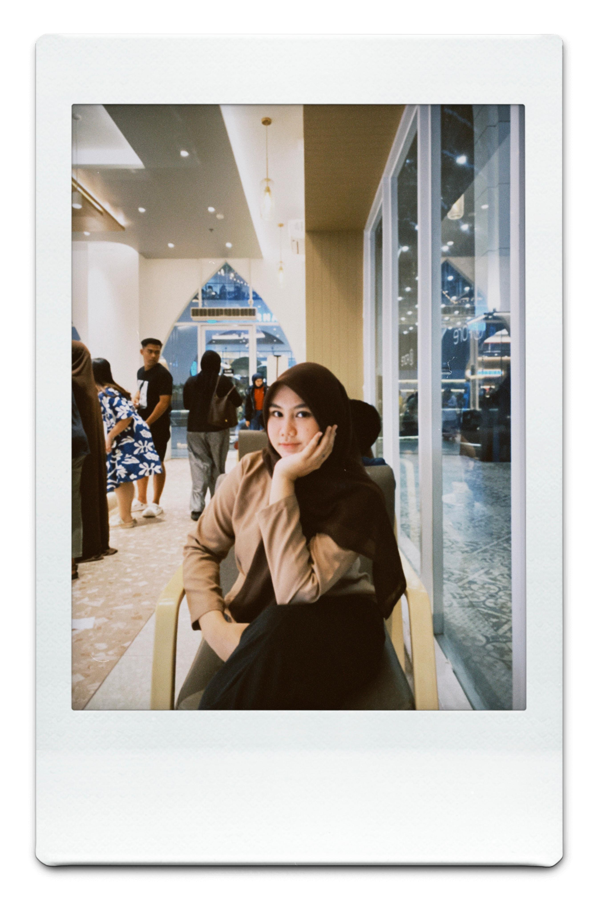
08 THESi paling nana
Different lives.
Different places.
One little circle.
The blurry photos.
The unexpected nights.
The stories we keep retelling.
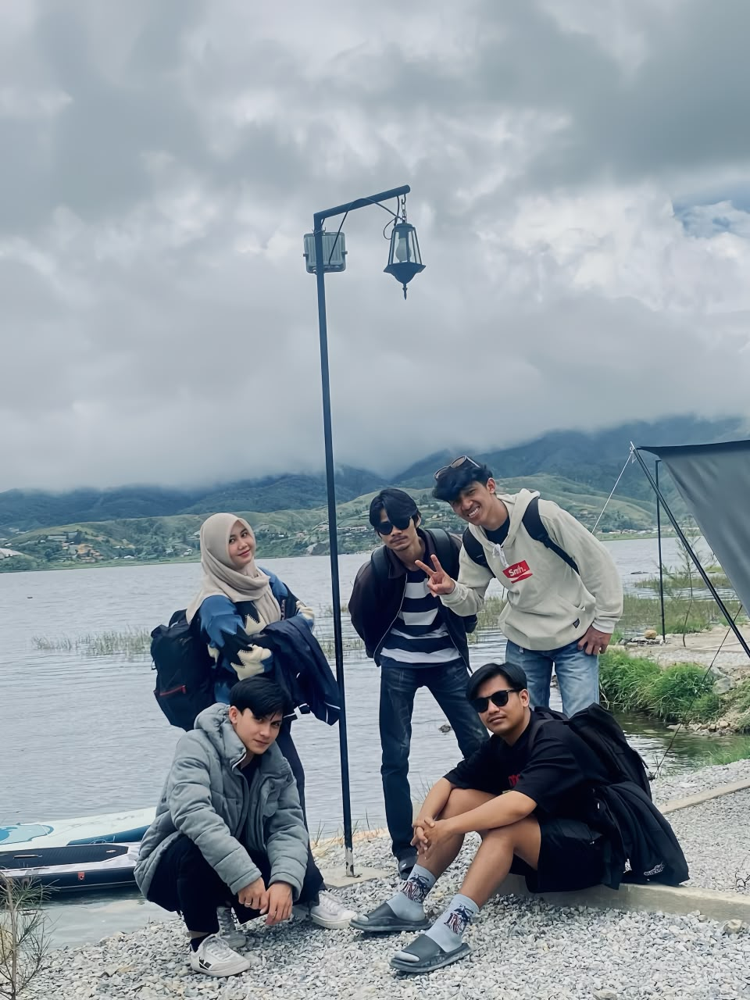
01THE DAY WE DID SOMETHING RANDOM
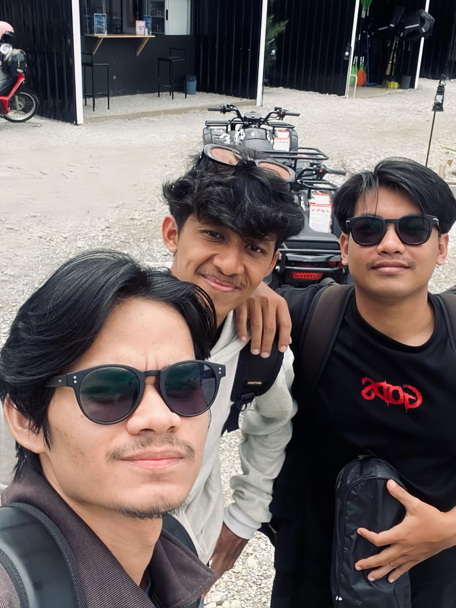
02AN UNPLANNED MOMENT
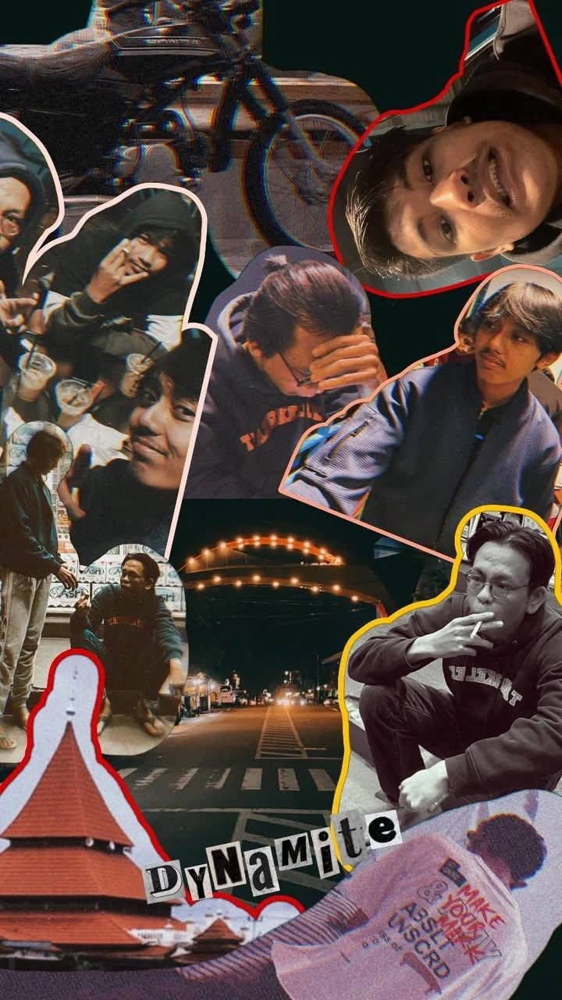
03JUST ANOTHER GOOD DAY
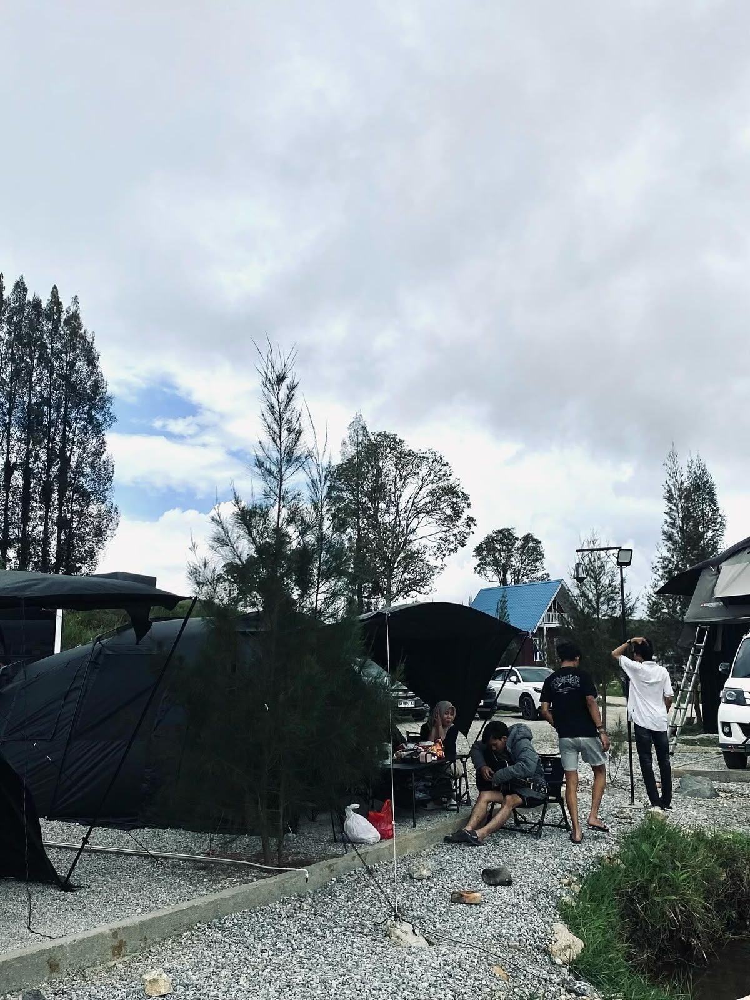
04THE DAY WE DID SOMETHING RANDOM
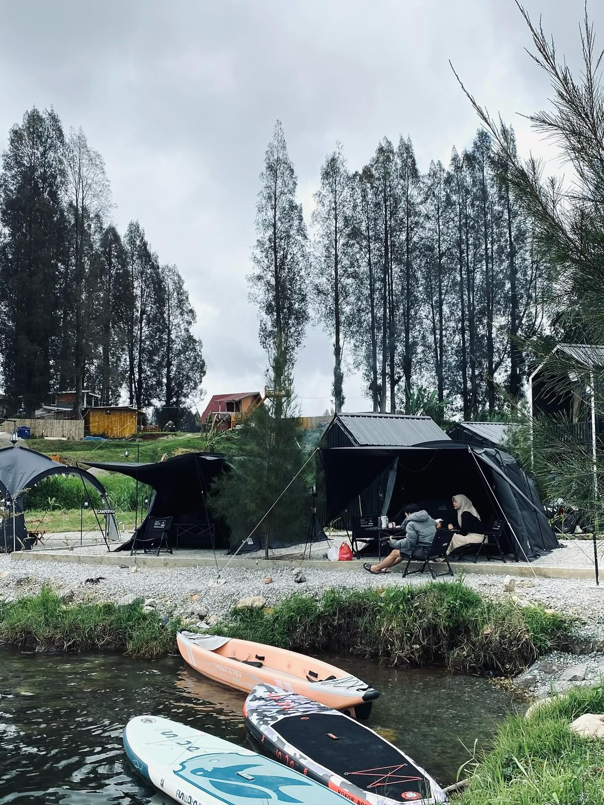
05AN UNPLANNED MOMENT
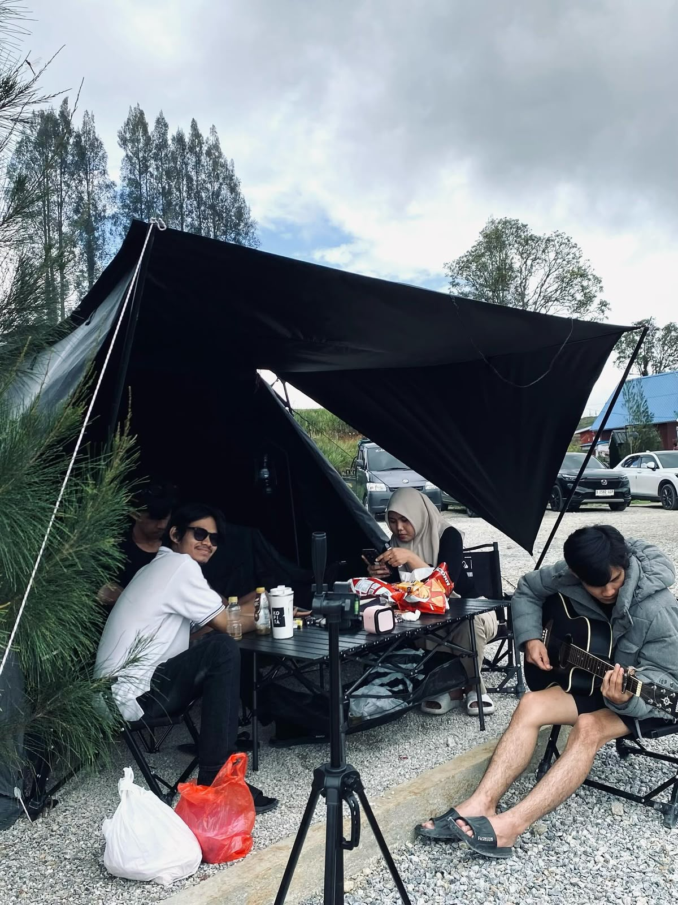
06JUST ANOTHER GOOD DAY
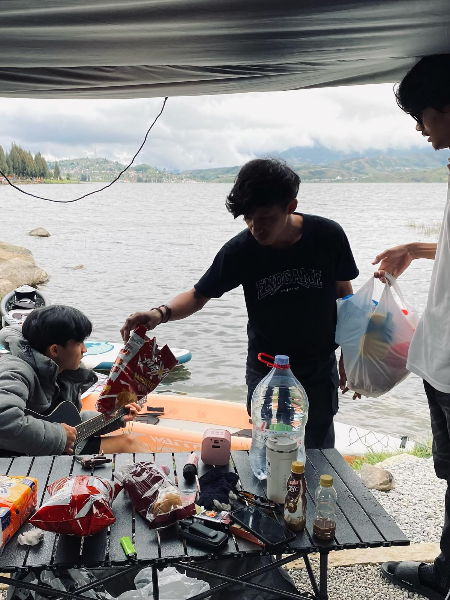
07ANOTHER CHAPTER OF OUR STORY
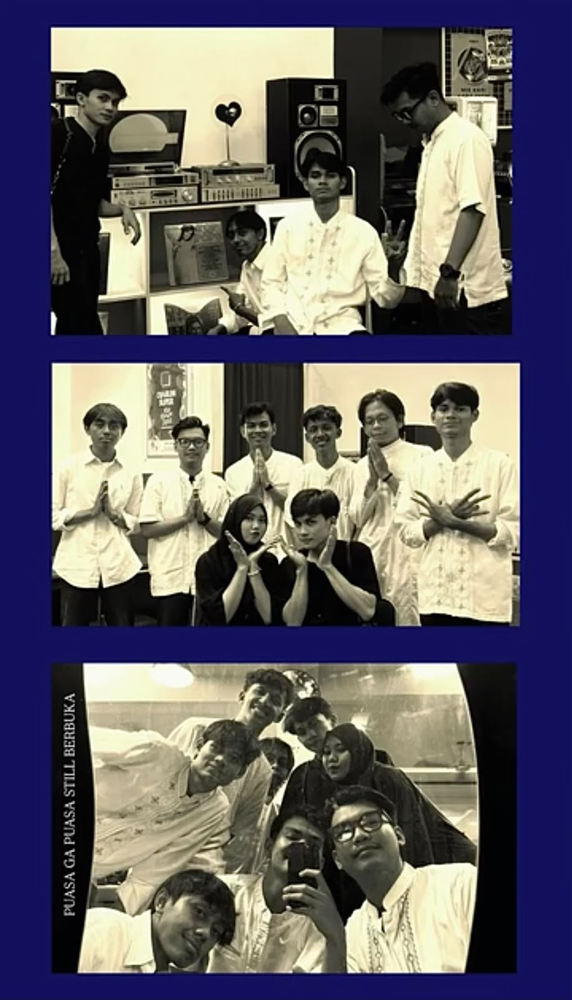
08MEMORIES WE WILL KEEP
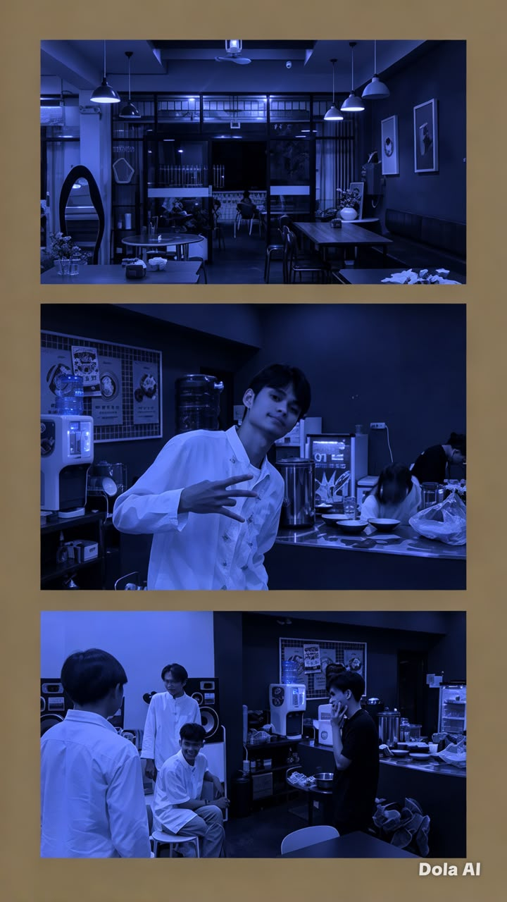
09TOGETHER, AS ALWAYS
Beberapa cerita cukup dijalani, dikenang, dan disyukuri karena kita pernah menjadi bagian di dalamnya.
Tidak ada yang tahu bahwa pertemuan biasa bisa menjadi bagian dari cerita yang begitu berarti. Kita datang dengan kehidupan masing-masing, tanpa tahu bahwa suatu hari nanti, orang-orang ini akan menjadi bagian dari banyak kenangan.
Kita pernah tertawa untuk hal-hal yang mungkin tidak dimengerti orang lain. Percakapan sederhana, candaan yang berulang, dan momen-momen kecil yang ternyata menjadi sesuatu yang sulit dilupakan.
Waktu terus berjalan. Kita tumbuh, memiliki kesibukan, mengejar mimpi, dan menghadapi jalan masing-masing. Mungkin tidak setiap hari kita bisa bersama, tetapi jarak dan waktu tidak harus menghapus arti sebuah persahabatan.
Suatu hari, kita mungkin akan melihat kembali semua ini dan tersenyum. Bukan karena semuanya selalu indah, tetapi karena kita pernah melewati banyak hal bersama. Dan selama masih ada cerita untuk dibagikan, persahabatan ini belum benar-benar selesai.
Beberapa orang mungkin hanya singgah dalam hidup. Namun, ada yang meninggalkan cerita yang akan selalu kita bawa.
FRIENDS CEMARA — OUR LITTLE CIRCLE
For the friends who make ordinary days
feel a little less ordinary.